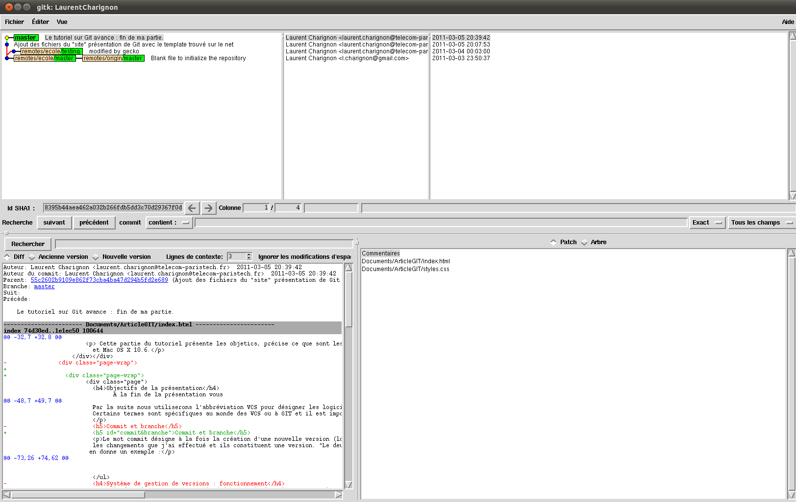

Un logiciel de gestion de versions (VCS en anglais) permet de stocker les différentes versions d'un ensemble de fichiers afin de faciliter l'évolutivité d'une production informatique. Par la suite nous utiliserons l'abréviation VCS pour désigner les logiciels de gestions de versions. Certains termes sont spécifiques au monde des VCS ou à GIT et il est important de bien les comprendre pour pouvoir travailler efficacement :
Le mot commit désigne à la fois la création d'une nouvelle version (lorsque c'est un verbe) et cette nouvelle version (lorsque c'est un nom). "Je commit" veut dire, j'entérine les changements que j'ai effectué et ils constituent une version. "Le deuxième commit de mon projet", désigne sa deuxième version. Les commits sont organisés en arbre et la figure suivante en donne un exemple :
 Source : progit.org
Source : progit.org
C0...C5 désignent des versions. Les flèches représentent des liens de parentés, entendons par là que C1 a été créé à partir de C0, C1 est postérieur à C0. Au niveau de C2 le développement s'est divisé en deux branches : master et iss53. Ces branches correspondent à la notion intuitive d'une branche d'un arbre par exemple: la branche master va de C0 à C4. Ne prenez pas garde à la notation adoptée pour les branches, elle sera expliquée par la suite.
Désigne l'ensemble des fichiers conservés par le système de gestion de version.
Désigne un dépot distant (par opposition à un dépot local).
sudo aptitude install git
Sous mac os X 10.6 git est déjà présent de base dans le système.
[user]
name = Laurent Charignon
email = laurent.charignon@telecom-paristech.fr
[core]
editor = vim
[alias]
co = checkout
br = branch
st = status
a = add
Ici il faut comprendre que mon nom et mon email sont spécifiés, que j'utilise vim et que j'utilise des alias pour quatre commandes.
Pour modifier ce fichier par le biais de la ligne de commande on utilise la commande git config avec la syntaxe suivante :
git config --global catégorie.champ valeur
par exemple :
git config --global user.name "Laurent Charignon"
L'option --global permet de faire que le choix s'applique à tous les projets que l'on utilise. Si vous voulez faire des configurations spécifiques à un projet vous pouvez retirer cette option.
man git config fournit une liste de toutes les options configurables avec la syntaxe mentionnée ci-dessus.
Vous pouvez utiliser différentes interfaces graphiques pour visualiser l'arbre des commits. En voici deux exemples :
gitk et son interface Tk :
qgit et son interface Qt :